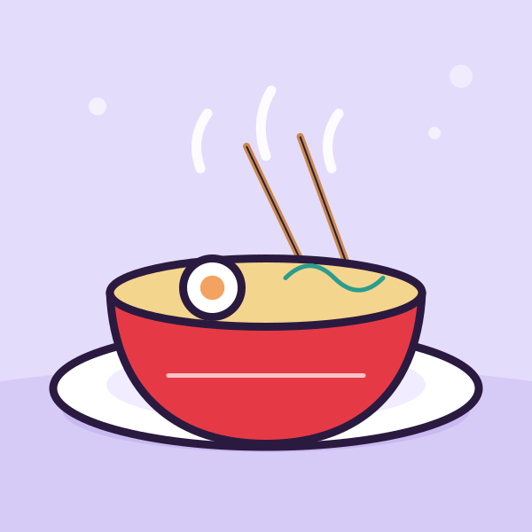
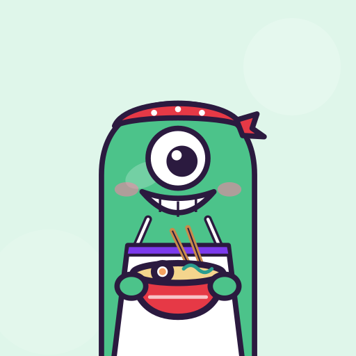
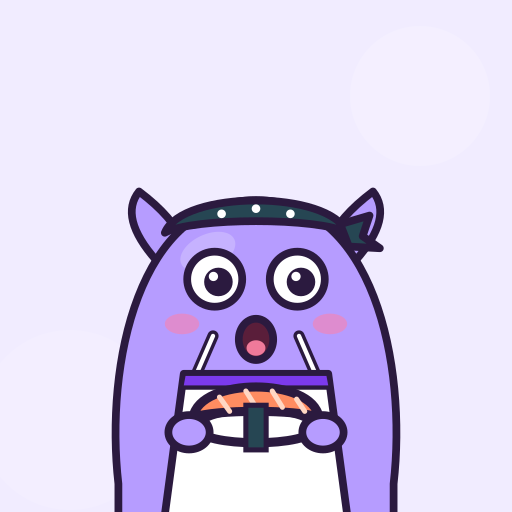
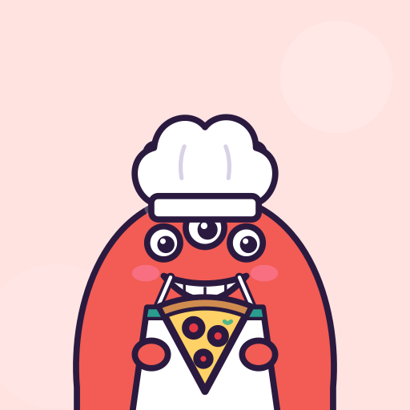
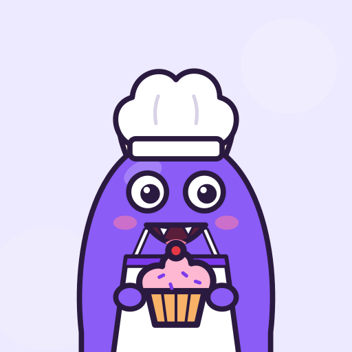
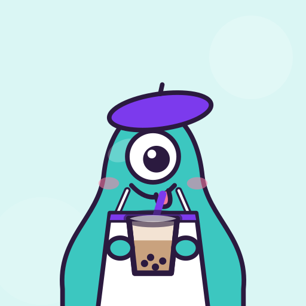
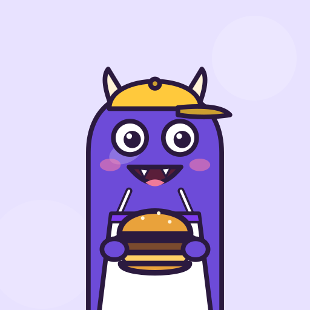
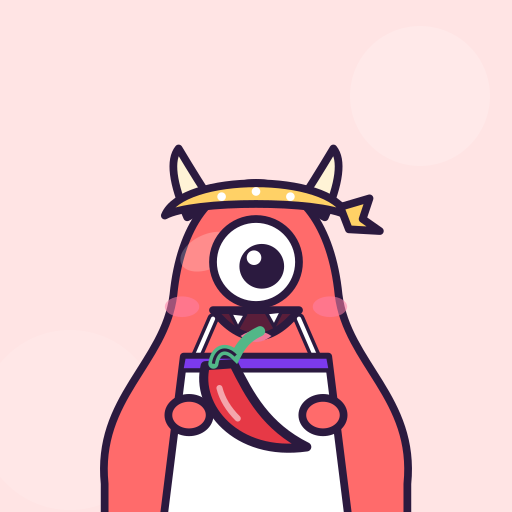
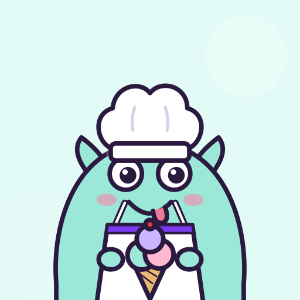
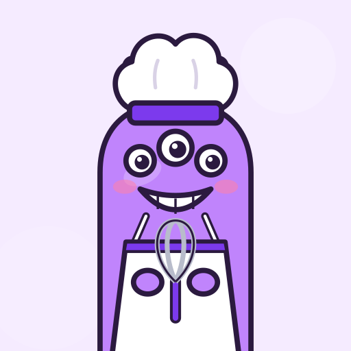

Show the plate.
Then show your face.
Cravely is where you post what you're eating with your first-bite reaction, see where your friends really eat, and keep your favourite spots secret when you want to.
Coming to Android first. Free to download.



Two photos, one honest review
Anyone can make food look good. The face you pull on the first bite is what tells your friends whether it was worth it.
- 1
Snap the plate
Take the food shot with the back camera, the way it arrived at the table.
- 2
Catch the first bite
The front camera grabs your reaction in the same moment. No retakes.
- 3
Rate it and post
Add stars, a price, the place and a few hashtags, then share it with friends or everyone.
See where your friends actually eat
Every post with a place lands on the foodie map, so the best spots near you come from people you know, not ads.
- Real places, real namesSearch cafés, takeaways and tiny independents as you type.
- Directions in one tapOpen any spot straight in Google Maps or Apple Maps.
- Friends firstFilter the map to people you follow when you want a trusted pick.

Slice ClubSome spots are too good to share
Put a Lock on a post and the name, address and pin stay hidden. Friends who really want to know can spend a Key to reveal it.
- Lock a spotYour favourite hidden gem stays a secret.
- Unlock with a KeyCurious? Use a Key to see exactly where it is.
- Collect fragmentsEvery Key spent on your Lock earns you a fragment. Three forge a free Key.
Pick your chef
No photo of yourself? Choose one of fourteen chef monsters for your profile, each with their favourite thing to eat.

Chompy- Noodle
- Bao
- Sizzle
- Taco
- Sprinkle
- Pepperoni

Boba- Maki
- Butters

Gulp
Blaze
Scoop
Whiskers
Be one of the first to try it
Cravely is in testing on Android. Email us the address of your Google account and we'll send you an invite to install it from Google Play.